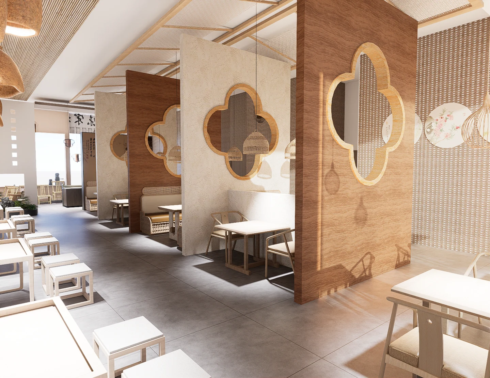
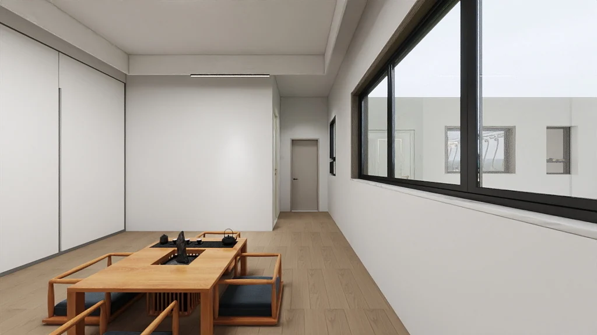

01 / PLAN
空间布局
从使用需求出发，梳理入户、收纳、停留和通行。餐饮与零售方案也考虑顾客动线和运营分区。
查看餐饮空间分区 ↗室内设计 / INTERIOR DESIGN
我做住宅、餐饮与零售空间设计。从平面梳理日常使用，再用材质和光线塑造空间。
查看设计作品
01 / WORK INDEX
02 / DESIGN PRACTICE
01 / PLAN
从使用需求出发，梳理入户、收纳、停留和通行。餐饮与零售方案也考虑顾客动线和运营分区。
查看餐饮空间分区 ↗02 / VISUALIZE
通过材质搭配、照明和陈设建立空间氛围，再用不同视角的效果图检验设计。
查看住宅效果图 ↗03 / DETAIL
用平面、吊顶、立面和节点交代尺寸与构件关系，让每一个视角都能回到同一套设计。
查看图纸与节点 ↗
03 / ABOUT ME
我是屈梦娜，一名室内装修设计师。我的作品从住宅延伸到餐饮、零售和主题体验空间，也包括调研展板与图文手册。
做方案时，我关注空间在日常里怎么用：从人走进门的第一步，到家具、灯光和收纳的具体位置，再把这些决定落实到图纸。